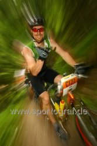

FSC Biker bei der Salzkammergut Trophy
Houns und Rynee waren bei einem der härtesten MTB-Marathons Österreichs dabei. Houns hat wieder mal bewiesen, dass er immer noch unser guter alter Houns of Hell ist, und radelte die 109km / 3600hm Strecke in bravourösen aber harten 7 Stunden herunter. Rynee hat auch wieder das Stehaufmandl in sich entdeckt und ließ sich auf der 53km / 1700hm Strecke durch drei Crashes nicht abhalten.
Wie in den alten Zeiten galt: Dirty Pilgrims - the mud, the blood and the beers!
Hier noch unsere Presseaussendung:
Am 12.7. ging in Bad Goisern am Hallstätter See zum 11 Mal die Salzkammergut Trophy über die Bühne, einer der härtesten Mountainbikemarathons, den die Österreichischen Alpen zu bieten haben. Auf Strecken von 53, 109 und unglaublichen 208 km matchten sich mehr als 3400 internationale Größen und Aspiranten um das Trophy Podium, oder auch nur um das Ausloten der eigenen Leistungsgrenzen. Auch der FSC 3x6=18 Bike war mit zwei motivierten Athleten vertreten.
Bei strömendem Regen startete der FSC Biker Hannes Kurtz auf der 109km langen B-Strecke. Harte 3600 Höhenmeter wartete ihm die Strecke auf, die von Bad Goisern ausgehend rund um den Hallstätter See und in vier knackigen Anstiegen zu den Gosauer Seen führte. Das Wetter klarte bald auf und die Sonne brannte erbarmungslos auf die Athleten nieder. Bei der Abfahrt zurück zum Hallstätter See konnte Hannes auf seine jahrelange Erfahrung aus dem Downhill Sport zurückgreifen und ließ die Konkurrenten reihenweise hinter sich. Nach sieben langen Stunden erreichte Hannes im zurückgekehrenden Regen das Ziel. Er kann mit seiner Leistung absolut zufrieden sein - er hat auf Anhieb eine Platzierung im ersten Drittel der Teilnehmer der 109km Strecke eingefahren.
Auch Reinhard Wagner, der zweite Marathonist des FSC 3x6=18, war mit seiner Leistung zufrieden. Auf der 53km Strecke fuhr er auf die Minute genau dieselbe Zeit, die er bei der Trophy 2007 erreicht hatte, und das nach eigenen Aussagen mit weniger Training, jedoch besserer kulinarischer Vorbereitung (Zitat: "Bitte für die nächsten 3 Wochen ka Pasta mehr!"). Mit 3:43 fuhr er souverän in die erste Hälfte unter ca. 1200 Teilnehmern. Für 2009 hat er sich zum Ziel gesetzt, mit Hannes gleichzuziehen und die 109er anzugehen. Es sei denn Hannes packt der Ehrgeiz und er steht im nächsten Jahr bereits um 5:00 früh am Start, um die 208km Extremstrecke in Angriff zu nehmen. Wer weiß? Wir halten unsere Leser am Laufenden.
Der FSC 3x6=18 Bike wird von Syncom Ziviltechniker G.m.b.H. unterstützt. zurück
Wie in den alten Zeiten galt: Dirty Pilgrims - the mud, the blood and the beers!
Hier noch unsere Presseaussendung:
Am 12.7. ging in Bad Goisern am Hallstätter See zum 11 Mal die Salzkammergut Trophy über die Bühne, einer der härtesten Mountainbikemarathons, den die Österreichischen Alpen zu bieten haben. Auf Strecken von 53, 109 und unglaublichen 208 km matchten sich mehr als 3400 internationale Größen und Aspiranten um das Trophy Podium, oder auch nur um das Ausloten der eigenen Leistungsgrenzen. Auch der FSC 3x6=18 Bike war mit zwei motivierten Athleten vertreten.
Bei strömendem Regen startete der FSC Biker Hannes Kurtz auf der 109km langen B-Strecke. Harte 3600 Höhenmeter wartete ihm die Strecke auf, die von Bad Goisern ausgehend rund um den Hallstätter See und in vier knackigen Anstiegen zu den Gosauer Seen führte. Das Wetter klarte bald auf und die Sonne brannte erbarmungslos auf die Athleten nieder. Bei der Abfahrt zurück zum Hallstätter See konnte Hannes auf seine jahrelange Erfahrung aus dem Downhill Sport zurückgreifen und ließ die Konkurrenten reihenweise hinter sich. Nach sieben langen Stunden erreichte Hannes im zurückgekehrenden Regen das Ziel. Er kann mit seiner Leistung absolut zufrieden sein - er hat auf Anhieb eine Platzierung im ersten Drittel der Teilnehmer der 109km Strecke eingefahren.
Auch Reinhard Wagner, der zweite Marathonist des FSC 3x6=18, war mit seiner Leistung zufrieden. Auf der 53km Strecke fuhr er auf die Minute genau dieselbe Zeit, die er bei der Trophy 2007 erreicht hatte, und das nach eigenen Aussagen mit weniger Training, jedoch besserer kulinarischer Vorbereitung (Zitat: "Bitte für die nächsten 3 Wochen ka Pasta mehr!"). Mit 3:43 fuhr er souverän in die erste Hälfte unter ca. 1200 Teilnehmern. Für 2009 hat er sich zum Ziel gesetzt, mit Hannes gleichzuziehen und die 109er anzugehen. Es sei denn Hannes packt der Ehrgeiz und er steht im nächsten Jahr bereits um 5:00 früh am Start, um die 208km Extremstrecke in Angriff zu nehmen. Wer weiß? Wir halten unsere Leser am Laufenden.
Der FSC 3x6=18 Bike wird von Syncom Ziviltechniker G.m.b.H. unterstützt. zurück